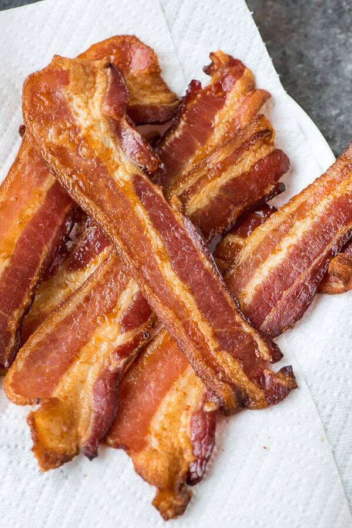

Oven-Baked Bacon

Description
I always bake bacon in the oven! You just need to plan a bit ahead as the bacon takes longer. With baking, the bacon grease stays nice and clean and you can reuse it to saute vegetables or eggs for extra flavor.
Ingredients
- 1 (16 ounce) package bacon
Steps
- Preheat the oven to 350 degrees F (175 degrees C). Line a baking sheet with parchment paper.
- Place bacon slices one next to the other on the prepared baking sheet.
- Bake in the preheated oven for 15 to 20 minutes. Remove from oven. Flip bacon slices with kitchen tongs and return to oven. Bake until crispy, 15 to 20 minutes more. Thinner slices will need less time, about 20 minutes total. Drain on a plate lined with paper towels.